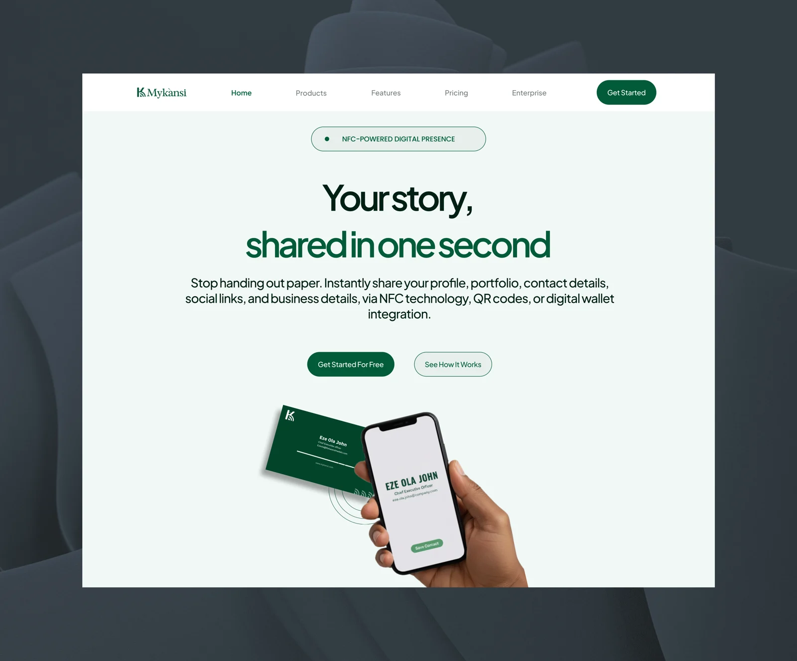

MyKansi lets people share their profile, portfolio, contact details and social links in a tap, through NFC cards, QR codes and digital wallets. I designed the website that explains the product and helps visitors decide what's right for them.

MyKansi needed a digital experience that could explain a product with a lot going on.
The website had to communicate several things at once: what MyKansi is, why someone would use it, how the experience works, what features are available, the NFC cards and hardware, and the plans and how they differ.
The challenge wasn't simply to make the website look good. It was to make the product easier to understand, and give visitors a clear path from discovering MyKansi to deciding what makes sense for them.
“Each section should have a job — explain, build confidence, compare, or move the user forward.”
Before designing anything, I listed the questions a new visitor would naturally have: What is MyKansi? How does it work? What can I actually do with it? What do I get? Which option is right for me? Those questions shaped the information architecture and the order of the website.
The homepage needed to communicate the core proposition quickly, rather than making people search the website to understand the product. Each part of the page answers the next question a visitor is likely to have.
Visitors don't all arrive with the same intent. Some want a quick understanding. Some want to explore features. Some are already considering a purchase and want to compare plans, pricing or hardware. The website supports each of them through product benefits, how it works, feature comparisons, pricing, NFC cards and hardware, and FAQs.
The homepage opens by establishing what MyKansi is and what it offers: share your profile, portfolio and contact details instantly through NFC, QR codes or a digital wallet.
Product previews show the card and the profile it opens, making the digital experience tangible instead of relying entirely on marketing copy.
A comparison table makes the differences between plans and features easy to scan, reducing the effort it takes to choose.
The pricing section continues the decision-making journey, helping visitors understand their options once they know what the product does.
The website connects the physical NFC card to the wider digital MyKansi experience, so the hardware reads as part of the product, not a separate purchase.
From discovering MyKansi to understanding the product, comparing options and choosing a plan, the website was designed to make the journey feel clear and intentional.
Want to explore the experience yourself?
View the live website ↗The mobile experience is still in progress.
The website is the first part of the MyKansi experience I've brought to completion.
The mobile product is currently being designed, with the goal of carrying the same principles into the product experience itself while accounting for the different needs of a mobile application.
So this case study is still evolving.
Product design isn't always about adding more.
When a product has multiple features, plans, hardware and use cases, the natural temptation is to explain everything.
The real design challenge is deciding what users need to know, when they need to know it, and what they should be able to do with that information.
For MyKansi, the website became less about presenting a collection of features and more about building a clear path from curiosity to understanding to action.
Started from the questions a new visitor needs answered.
Designed for visitors with different levels of intent.
Gave every section a clear job in the journey.
Designed the full website experience.
Built the experience to work across screen sizes.
Brought the journey to life through motion.